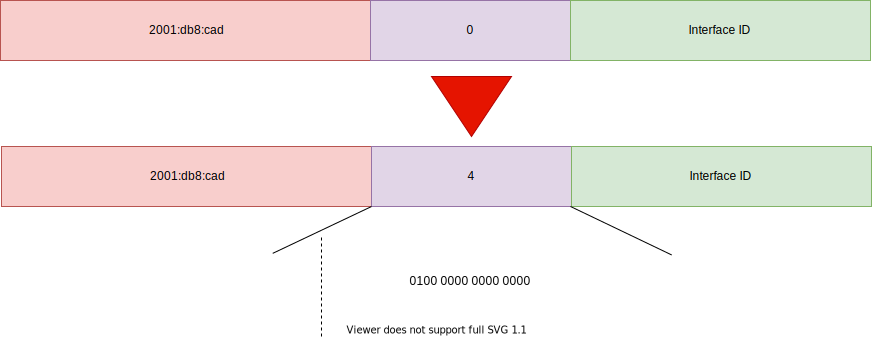
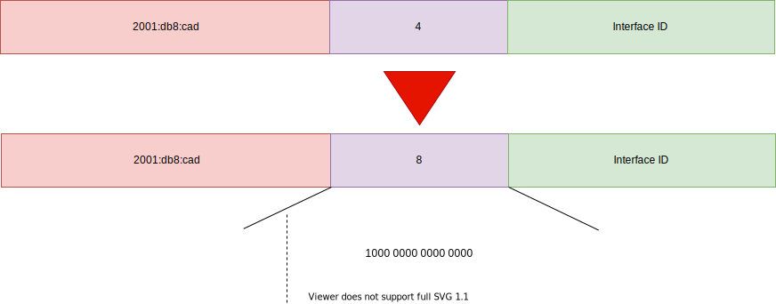

- 64 bit ausgeschrieben: 2001:0db8:0cad:0000::/48
- Wichtig! die zwei bit nach den ersten 48
bit der IPv6-Adresse
- wir erinnern uns 2^2 bit = 4 Subnetze
- im darüber dargestelten ersten Oktett zählen wir, von links nach rechts, die zwei bit ab,
denn nur in denen können wir uns "bewegen"
- danach wird einfach in binär hochgezählt
- daraus ergibt sich als volles Nibble [0100]2
- [0000]16 ist in binär [0000 0000]2

- im darüber dargestelten ersten Oktett zählen wir wieder von links nach rechts die zwei bit
ab, denn nur in denen können wir uns "bewegen"
- danach wird wieder einfach in binär hochgezählt
- daraus ergibt sich als volles Nibble [1000]2
- im darüber dargestelten ersten Oktett zählen wir wieder von links nach rechts die zwei bit
ab, denn nur in denen können wir uns "bewegen"
- danach wird wieder einfach in binär hochgezählt
- daraus ergibt sich als volles Nibble [1100]2